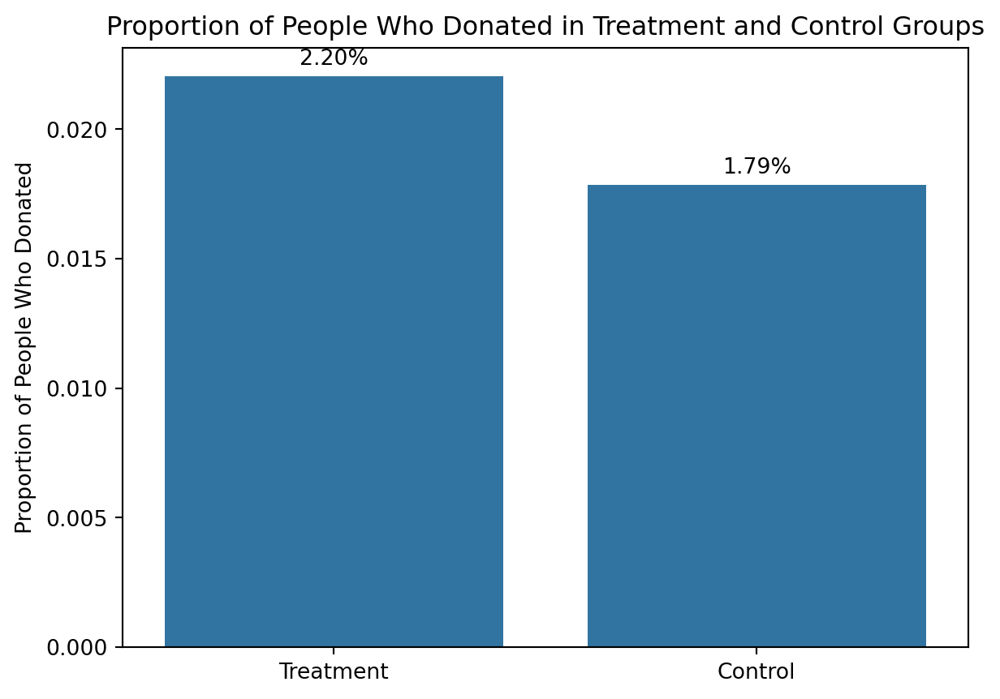
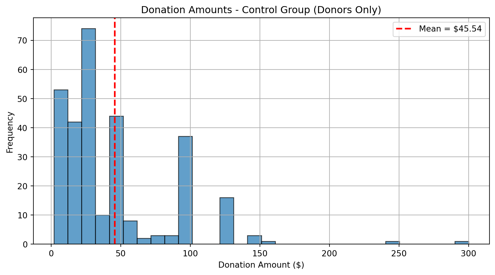
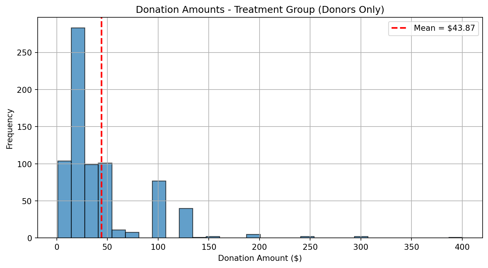
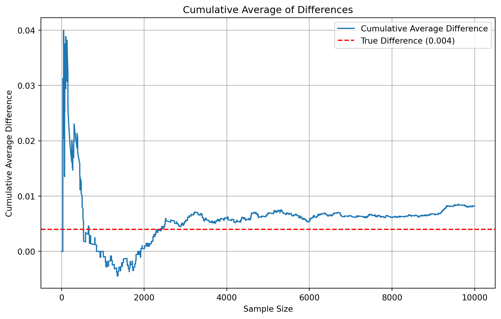
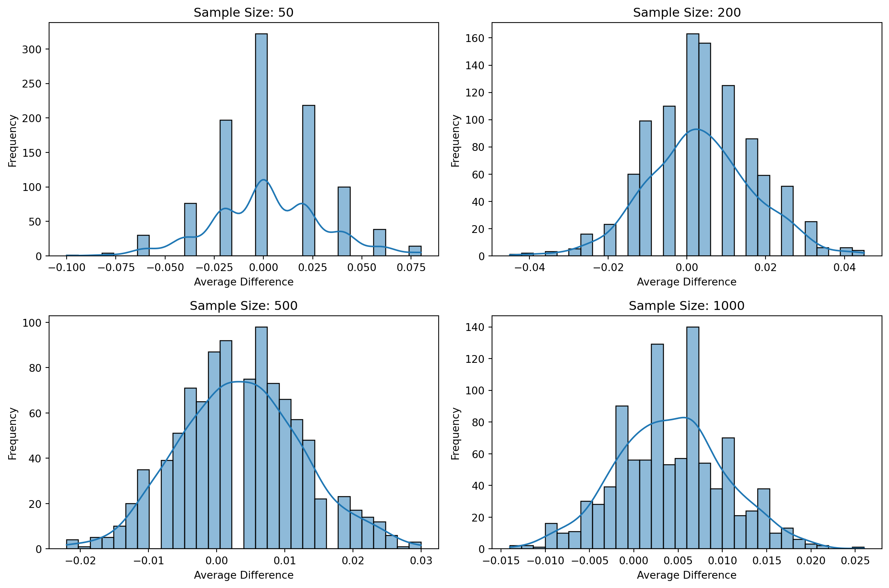

Dean Karlan at Yale and John List at the University of Chicago conducted a field experiment to test the effectiveness of different fundraising letters. They sent out 50,000 fundraising letters to potential donors, randomly assigning each letter to one of three treatments: a standard letter, a matching grant letter, or a challenge grant letter. They published the results of this experiment in the American Economic Review in 2007. The article and supporting data are available from the AEA website and from Innovations for Poverty Action as part of Harvard’s Dataverse.
This project seeks to replicate their results. The goal was to rigorously test how different fundraising strategies, particularly matching grant offers, influence individuals’ willingness to donate and the amounts they contribute. The experiment aimed to answer a key question in behavioral economics and public policy: Does lowering the “price” of giving (via matching donations) increase charitable contributions?
Partipants were assigned to either a control group or a matching grant treatment group, and within the matching grant treatment group individuals were randomly assigned to different matching grant rates,matching grant maximum amounts, and suggested donation amounts
Data
Description
Variable Definitions
Variable
Description
treatment
Treatment
control
Control
ratio
Match ratio
ratio2
2:1 match ratio
ratio3
3:1 match ratio
size
Match threshold
size25
$25,000 match threshold
size50
$50,000 match threshold
size100
$100,000 match threshold
sizeno
Unstated match threshold
ask
Suggested donation amount
askd1
Suggested donation was highest previous contribution
askd2
Suggested donation was 1.25 x highest previous contribution
askd3
Suggested donation was 1.50 x highest previous contribution
ask1
Highest previous contribution (for suggestion)
ask2
1.25 x highest previous contribution (for suggestion)
ask3
1.50 x highest previous contribution (for suggestion)
amount
Dollars given
gave
Gave anything
amountchange
Change in amount given
hpa
Highest previous contribution
ltmedmra
Small prior donor: last gift was less than median $35
freq
Number of prior donations
years
Number of years since initial donation
year5
At least 5 years since initial donation
mrm2
Number of months since last donation
dormant
Already donated in 2005
female
Female
couple
Couple
state50one
State tag: 1 for one observation of each of 50 states; 0 otherwise
nonlit
Nonlitigation
cases
Court cases from state in 2004-5 in which organization was involved
statecnt
Percent of sample from state
stateresponse
Proportion of sample from the state who gave
stateresponset
Proportion of treated sample from the state who gave
stateresponsec
Proportion of control sample from the state who gave
stateresponsetminc
stateresponset - stateresponsec
perbush
State vote share for Bush
close25
State vote share for Bush between 47.5% and 52.5%
red0
Red state
blue0
Blue state
redcty
Red county
bluecty
Blue county
pwhite
Proportion white within zip code
pblack
Proportion black within zip code
page18_39
Proportion age 18-39 within zip code
ave_hh_sz
Average household size within zip code
median_hhincome
Median household income within zip code
powner
Proportion house owner within zip code
psch_atlstba
Proportion who finished college within zip code
pop_propurban
Proportion of population urban within zip code
# Read in the stata datadata = pd.read_stata("karlan_list_2007.dta")data.head()
treatment
control
ratio
ratio2
ratio3
size
size25
size50
size100
sizeno
...
redcty
bluecty
pwhite
pblack
page18_39
ave_hh_sz
median_hhincome
powner
psch_atlstba
pop_propurban
0
0
1
Control
0
0
Control
0
0
0
0
...
0.0
1.0
0.446493
0.527769
0.317591
2.10
28517.0
0.499807
0.324528
1.0
1
0
1
Control
0
0
Control
0
0
0
0
...
1.0
0.0
NaN
NaN
NaN
NaN
NaN
NaN
NaN
NaN
2
1
0
1
0
0
$100,000
0
0
1
0
...
0.0
1.0
0.935706
0.011948
0.276128
2.48
51175.0
0.721941
0.192668
1.0
3
1
0
1
0
0
Unstated
0
0
0
1
...
1.0
0.0
0.888331
0.010760
0.279412
2.65
79269.0
0.920431
0.412142
1.0
4
1
0
1
0
0
$50,000
0
1
0
0
...
0.0
1.0
0.759014
0.127421
0.442389
1.85
40908.0
0.416072
0.439965
1.0
5 rows × 51 columns
Balance Test
As an ad hoc test of the randomization mechanism, I provide a series of tests that compare aspects of the treatment and control groups to assess whether they are statistically significantly different from one another.
One of the variables that I tested was mrm2, which is the number of months since the last donation. I ran a t-test and a linear regression to test the balance of the treatment and control groups on this variable.
# Test the balance of the treatment and control groups on a few variables# For example, test months since last donation (mrm2)treatment_mrm2 = data[data['treatment'] ==1]['mrm2']control_mrm2 = data[data['treatment'] ==0]['mrm2']t_stat, p_value = rsm.stats.ttest_ind(treatment_mrm2, control_mrm2)print(f"T-statistic: {t_stat}, P-value: {p_value}")# # Perform a linear regression to test the balance# Sample sizesn1, n2 =len(control_mrm2), len(treatment_mrm2)# Means and standard deviationsmean1, mean2 = control_mrm2.mean(), treatment_mrm2.mean()std1, std2 = control_mrm2.std(), treatment_mrm2.std()print(f"Mean of control group: {mean1.round(3)}, Mean of treatment group: {mean2.round(3)}")#rounfd to 3 decimal placesprint(f"Standard deviation of control group: {round(std1,3)}, Standard deviation of treatment group: {round(std2,3)}")# Pooled standard errorse_pooled = ((std1 **2) / n1 + (std2 **2) / n2) **0.5# T-statistict_stat = (mean2 - mean1) / se_pooled# Degrees of freedom using Welch's approximationdf_welch = ((std1**2/n1 + std2**2/n2)**2) / (((std1**2/n1)**2)/(n1-1) + ((std2**2/n2)**2)/(n2-1))# Two-tailed p-valuep_value_ttest =2* stats.t.sf(abs(t_stat), df=df_welch)# Print t-test resultsprint("T-Test Results:")print(f"t-statistic: {t_stat:.4f}")print(f"p-value: {p_value_ttest:.4f}")
T-statistic: nan, P-value: nan
Mean of control group: 12.998, Mean of treatment group: 13.012
Standard deviation of control group: 12.074, Standard deviation of treatment group: 12.086
T-Test Results:
t-statistic: 0.1195
p-value: 0.9049
# Linear regressionregression = smf.ols('mrm2 ~ treatment', data=data).fit()print("\nLinear Regression Results:")print(regression.summary2().tables[1])
The t-test and linear regression results show that the treatment and control groups are not statistically significantly different from one another on the variable mrm2. The p-value is 0.9, which is much higher than the 0.05 threshold for statistical significance. This suggests that the randomization mechanism worked well, and the treatment and control groups are balanced on this variable.Both method yield the same results
Experimental Results
Charitable Contribution Made
First, I analyze whether matched donations lead to an increased response rate of making a donation.
I created a barplot, where the left bar is the proportion of people who donated in the treatment group and the right bar is the proportion of people who donated in the control group.
I split the data into treatment and control groups, and then calculated the mean of the gave variable for each group. The gave variable is a binary variable that indicates whether a donation was made (1) or not (0). I then plotted the results using a barplot with the treatment and control groups on the x-axis and the proportion of people who donated on the y-axis.
import matplotlib.pyplot as pltimport seaborn as snsdata_t = data[data['treatment'] ==1]data_c = data[data['treatment'] ==0]print(data_t['gave'].mean(), data_c['gave'].mean())# Calculate the proportion of people who donated in treatment and control groupstreatment_donated = data[data['treatment'] ==1]['gave'].mean()control_donated = data[data['treatment'] ==0]['gave'].mean()print(f"Proportion of people who donated in treatment group: {treatment_donated}")print(f"Proportion of people who donated in control group: {control_donated}")# Create a barplotax = sns.barplot(x=['Treatment', 'Control'], y=[treatment_donated, control_donated])plt.ylabel('Proportion of People Who Donated')plt.title('Proportion of People Who Donated in Treatment and Control Groups')for container in ax.containers: ax.bar_label(container, labels=[f"{val*100:.2f}%"for val in [treatment_donated, control_donated]], padding=3)plt.show()
0.02203856749311295 0.017858212980164198
Proportion of people who donated in treatment group: 0.02203856749311295
Proportion of people who donated in control group: 0.017858212980164198

Those in the control group donated at a rate of 1.79%, while those in the treatment group donated at a rate of 2.2%. Those in the treatment group were about 0.42 percentage points more likely to donate than those in the control group.
I then ran a t-test between the treatment and control groups on if a donation was given or not.
# Run a bivariate linear regression: gave ~ treatmentmodel = smf.ols("gave ~ treatment", data=data).fit()# Print the regression resultsprint("\nBivariate Linear Regression Results:")print(model.summary2().tables[1].round(4))
From the linear regression that we ran, we can see that the control group had a response rate of 0.0179, while the treatment group has a additional 0.0042 percentage rate of donation. This means that on average, the treatment group gave donations at a rate of 0.0221.
There is a difference in the two groups with a small p-value of 0.002, which is way below the threshold of 0.05. People in the treatment group were about 0.42 percentage points more likely to donate than those in the control group. Even though the increase in donations may seem small, it’s not random — it’s a real effect, confirmed by the low p-value.
What this tells us about human behavior:
When people are told their donation will be matched (or is part of a challenge), they become more likely to give. This suggests people are motivated by impact — knowing their money goes further — or by social cues, like the idea that others are contributing too.
In other words, the framing of the ask matters. Small tweaks to how a donation request is presented — like mentioning matching grants — can significantly change behavior, even in a large and diverse sample.
Next we will run a probit regression where the outcome variable is whether any charitable donation was made and the explanatory variable is assignment to treatment or control.
probit_model = smf.probit('gave ~ treatment', data=data).fit()# Print the summary of the probit regressionprint("\nProbit Regression Results:")print(probit_model.summary2().tables[1].round(4))
The treatment coefficient is 0.0868, which means people who received the treatment letter (matching/challenge grant) were more likely to donate than those who got the standard control letter.The significance means it’s very unlikely this effect happened by chance. It is highly significant at a pvalue of 0.0019, meaning that framing charitable appeals as matched or challenged boosts participation. The probablity of those donating in the control group is very low
Next we ran a linear probability model (LPM) to see if the results are similar to the probit regression.
The results of the linear regression match Table 3 column 1, despite it indicating that the results come from probit regressions. Linear regression coefficients are easier to interpret than probit coefficients, as they are in percentage points, while probit coefficeints are on a z-score scale. For the results to be more interpretable, they might have decided to use the linear regression results to make the findings more easy to understand.
Differences between Match Rates
Next, I assess the effectiveness of different sizes of matched donations on the response rate.
I used a series of t-tests to test whether the size of the match ratio has an effect on whether people donate or not. For example, does the 2:1 match rate lead to an increase in the likelihood that someone donates as compared to the 1:1 match rate?
I tested whether the 2:1 match ratio (represented by the variable ratio2) significantly increases the likelihood of donation compared to the baseline match group (likely 1:1 match or no match).
model_matched2 = smf.ols("gave ~ ratio2", data=data).fit()print("\nLinear Regression Results with ratio2:")print(model_matched2.summary2().tables[1].round(4))
Linear Regression Results with ratio2:
Coef. Std.Err. t P>|t| [0.025 0.975]
Intercept 0.0201 0.0007 27.8662 0.0000 0.0187 0.0215
ratio2 0.0026 0.0015 1.6726 0.0944 -0.0004 0.0056
The intercept of 0.0201 tells us about 2.01% of the baseline group gave a donation. Those who were offered the treatment was 0.26 percentage points more likely to donate compared to the baseline group. The p-value is high at 0.094. The 95% confidence interval includes 0 (from –0.0004 to 0.0056), so we can’t rule out the possibility that this increase is due to chance.
Next we will test whether the 3:1 match ratio (represented by the variable ratio3) significantly increases the likelihood of donation compared to the baseline match group (likely 1:1 match or no match).
We ran multiple tests to see if the 3:1 match ratio significantly increases the likelihood of donation compared to the baseline match group.
# Filter to only include individuals in matched treatment groups (exclude control)matched_df = data[data['ratio'].notna() & data['gave'].notna()]# Check donation rates by match ratiodonation_rates = matched_df.groupby('ratio')['gave'].agg(['mean', 'count'])print("Donation rates by match ratio:\n", donation_rates)# Define groups based on match ratio values (1 = 1:1, 2 = 2:1, 3 = 3:1)gave_1to1 = matched_df[matched_df['ratio'] ==1]['gave']gave_2to1 = matched_df[matched_df['ratio'] ==2]['gave']gave_3to1 = matched_df[matched_df['ratio'] ==3]['gave']# Run t-tests between match ratiost_1v2 = stats.ttest_ind(gave_1to1, gave_2to1, equal_var=False)t_1v3 = stats.ttest_ind(gave_1to1, gave_3to1, equal_var=False)t_2v3 = stats.ttest_ind(gave_2to1, gave_3to1, equal_var=False)# Print t-test resultsprint("\nT-Test Results:")print(f"1:1 vs 2:1 — t = {t_1v2.statistic:.3f}, p = {t_1v2.pvalue:.3f}")print(f"1:1 vs 3:1 — t = {t_1v3.statistic:.3f}, p = {t_1v3.pvalue:.3f}")print(f"2:1 vs 3:1 — t = {t_2v3.statistic:.3f}, p = {t_2v3.pvalue:.3f}")# Interpretationprint("\nInterpretation:")print("None of the p-values are below 0.05, so we do NOT find statistically significant differences.")print("This supports the authors' note on page 8 that higher match ratios did not increase donation rates.")
Donation rates by match ratio:
mean count
ratio
Control 0.017858 16687
1 0.020749 11133
2 0.022633 11134
3 0.022733 11129
T-Test Results:
1:1 vs 2:1 — t = -0.965, p = 0.335
1:1 vs 3:1 — t = -1.015, p = 0.310
2:1 vs 3:1 — t = -0.050, p = 0.960
Interpretation:
None of the p-values are below 0.05, so we do NOT find statistically significant differences.
This supports the authors' note on page 8 that higher match ratios did not increase donation rates.
/tmp/ipykernel_79371/1908724726.py:5: FutureWarning: The default of observed=False is deprecated and will be changed to True in a future version of pandas. Pass observed=False to retain current behavior or observed=True to adopt the future default and silence this warning.
donation_rates = matched_df.groupby('ratio')['gave'].agg(['mean', 'count'])
The pvalues are way above the 0.05 threshold, so we do not find statistically significant differences between the match ratios. This supports the authors’ note on page 8 that higher match ratios did not increase donation rates.
I also tried running a regression on the categorical variable ratio
1:1 match leads to a +0.29 percentage point increase — but not statistically significant (p = 0.0966).
2:1 match leads to a +0.48 percentage point increase — significant (p = 0.0061).
3:1 match leads to a +0.49 percentage point increase — also significant (p = 0.0051).
As the match ratio increases, so does the likelihood of donating — but only the 2:1 and 3:1 ratios have statistically significant effects. This supports the idea (suggested in the paper) that larger match ratios may be more motivating, though the jump from 2:1 to 3:1 doesn’t add much more impact.
I then calculated the response rate difference between the 1:1 and 2:1 match ratios and the 2:1 and 3:1 ratios by computing the differences in the fitted coefficients of the previous regression.
response_rates = data.groupby("ratio")["gave"].mean()# 2. Compute differences directlydiff_2v1_direct = response_rates[2] - response_rates[1]diff_3v2_direct = response_rates[3] - response_rates[2]# 3. Run regression using match ratio as a categorical variablemodel = smf.ols("gave ~ C(ratio)", data=data).fit()coefs = model.params# 4. Compute differences from regression coefficientsdiff_2v1_regression = coefs["C(ratio)[T.2]"] - coefs["C(ratio)[T.1]"]diff_3v2_regression = coefs["C(ratio)[T.3]"] - coefs["C(ratio)[T.2]"]# 5. Create summary tablesummary = pd.DataFrame({"Method": ["Direct from data", "From regression"],"2:1 vs 1:1": [diff_2v1_direct, diff_2v1_regression],"3:1 vs 2:1": [diff_3v2_direct, diff_3v2_regression]})# Display resultprint(summary.round(4))
Method 2:1 vs 1:1 3:1 vs 2:1
0 Direct from data 0.0019 0.0001
1 From regression 0.0019 0.0001
/tmp/ipykernel_79371/3107425854.py:1: FutureWarning: The default of observed=False is deprecated and will be changed to True in a future version of pandas. Pass observed=False to retain current behavior or observed=True to adopt the future default and silence this warning.
response_rates = data.groupby("ratio")["gave"].mean()
Moving from a 1:1 to a 2:1 match produces a small but meaningful increase in donation likelihood.Increasing the match further to 3:1 shows almost no additional gain in response rate. Larger match ratios do appear to increase the likelihood of giving, but the biggest gain is from introducing a match or increasing it to 2:1. Going beyond 2:1 yields diminishing returns. This supports the paper’s insight that people are responsive to matching, but the size of the match has limits in effectiveness.
Size of Charitable Contribution
In this subsection, I analyze the effect of the size of matched donation on the size of the charitable contribution.
I ran a t-test and a linear regression on the donation amount on the treatment status.
People in the control group gave about $0.81 on average.
Being assigned to treatment increased giving by about $0.15, but the effect is not statistically significant at the 5% level.
📘 What do we learn? While more people gave in the treatment group (as earlier results showed), the amount donated per person isn’t significantly higher.
This reinforces that the treatment increased participation more than donation size.
It’s consistent with Karlan & List’s broader point: subtle framing can boost participation, but the total money raised doesn’t scale linearly with participation.
For the next calculation, I limited the data to just people who made a donation and repeated the previous analysis. This regression allows us to analyze how much respondents donate conditional on donating some positive amount.
donors_df = data[data['amount'] >0].copy()# T-test: compare donation amounts between treatment and control groups among donorsdonation_treated = donors_df[donors_df['treatment'] ==1]['amount']donation_control = donors_df[donors_df['treatment'] ==0]['amount']t_stat_donors, p_value_donors = stats.ttest_ind(donation_treated, donation_control, equal_var=False)print("T-Test (Donors Only):")print(f"t-statistic: {t_stat_donors:.3f}")print(f"p-value: {p_value_donors:.3f}")# Run regression: donation amount ~ treatment (among donors only)reg_donors = smf.ols('amount ~ treatment', data=donors_df).fit()print("\nRegression Summary (Donors Only):")print(reg_donors.summary2().tables[1].round(4))
On average, donors gave $45.54 in the control group.
Treatment group donors gave $1.67 less, but this difference is not statistically significant.
🧠 What did we learn? Treatment increased participation (more people gave), but conditional on giving, people did not donate more — they might’ve actually donated slightly less.
The treatment effect is not significant here, and the effect size is small.
❓Causal Interpretation? Since treatment was randomly assigned, the coefficient on treatment can be interpreted as causal — but only for this subpopulation of donors.
This is called selection on the outcome — restricting to donors removes the randomization, so it’s not a causal estimate of the full effect.
📌 Bottom line: We can’t say treatment caused people to give less money. We can only say that among those who gave, treatment did not significantly increase donations. Once someone chose to donate, the treatment didn’t influence their donation size.
Now I will make two plots: one for the treatment group and one for the control. Each plot will be a histogram of the donation amounts only among people who donated. I added a red vertical bar to indicate the sample average for each plot.
mean_treated = donation_treated.mean()mean_control = donation_control.mean()# Plot histogram for control groupplt.figure(figsize=(10, 5))plt.hist(donation_control, bins=30, alpha=0.7, edgecolor='black')plt.axvline(mean_control, color='red', linestyle='dashed', linewidth=2, label=f'Mean = ${mean_control:.2f}')plt.title('Donation Amounts - Control Group (Donors Only)')plt.xlabel('Donation Amount ($)')plt.ylabel('Frequency')plt.legend()plt.grid(True)plt.show()# Plot histogram for treatment groupplt.figure(figsize=(10, 5))plt.hist(donation_treated, bins=30, alpha=0.7, edgecolor='black')plt.axvline(mean_treated, color='red', linestyle='dashed', linewidth=2, label=f'Mean = ${mean_treated:.2f}')plt.title('Donation Amounts - Treatment Group (Donors Only)')plt.xlabel('Donation Amount ($)')plt.ylabel('Frequency')plt.legend()plt.grid(True)plt.show()


We can see in the control group, the average donation amount is $45.54, while in the treatment group, the average donation amount is around $43.87. The treatment group has a slightly lower average donation amount than the control group, but the difference is not statistically significant.
Simulation Experiment
As a reminder of how the t-statistic “works,” in this section I use simulation to demonstrate the Law of Large Numbers and the Central Limit Theorem.
Suppose the true distribution of respondents who do not get a charitable donation match is Bernoulli with probability p=0.018 that a donation is made.
Further suppose that the true distribution of respondents who do get a charitable donation match of any size is Bernoulli with probability p=0.022 that a donation is made.
Law of Large Numbers
I will simulate 10,000 draws from the control distribution and 10,000 draws from the treatment distribution. I will then calculate a vector of 10,000 differences, and then plot the cumulative average of that vector of differences. This will help demonstrate the Law of Large Numbers.
p_control = (data[data['treatment'] ==0]['gave'].mean()).round(3)p_treatment = (data[data['treatment'] ==1]['gave'].mean()).round(3)print(f"Control group mean: {p_control}")print(f"Treatment group mean: {p_treatment}")# Set the random seed for reproducibilitynp.random.seed(42)n =10000# Simulate the datacontrol = np.random.binomial(1, p_control, n)treatment = np.random.binomial(1, p_treatment, n)# Calculate the differencediff = treatment - control# Calculate the cumulative averagecumulative_avg = np.cumsum(diff) / np.arange(1, n +1)# Plot the cumulative averageplt.figure(figsize=(10, 6))plt.plot(cumulative_avg, label='Cumulative Average Difference')plt.axhline(y=0.004, color='r', linestyle='--', label='True Difference (0.004)')plt.title('Cumulative Average of Differences')plt.xlabel('Sample Size')plt.ylabel('Cumulative Average Difference')plt.legend()plt.grid()plt.show()
Control group mean: 0.018
Treatment group mean: 0.022

From the graph, we can see that it it initally highly volatile, but as the sample size increase around 3000 samples, it starts to stablize and remain somewhat consistent. With more samples, we can get even closer to the true difference
Central Limit Theorem
Next to demonstrate the central limit theorem, I will make 4 histograms with random draws of samples sizes (50, 200, 500, and 1000).
# Define the parametersn_samples = [50, 200, 500, 1000]n_simulations =1000# Initialize a list to store the resultsresults = []# Simulate the datafor n in n_samples: control_cc = np.random.binomial(1, p_control, (n_simulations, n)) treatment_cc = np.random.binomial(1, p_treatment, (n_simulations, n))# Calculate the average difference avg_diff = np.mean(treatment_cc - control_cc, axis=1) results.append(avg_diff)# Plot the histogramsimport matplotlib.pyplot as pltimport seaborn as snsplt.figure(figsize=(12, 8))for i, n inenumerate(n_samples): plt.subplot(2, 2, i +1) sns.histplot(results[i], bins=30, kde=True) plt.title(f'Sample Size: {n}') plt.xlabel('Average Difference') plt.ylabel('Frequency')plt.tight_layout()plt.show()

We can see that the distribution of the average differences approaches a normal distribution as the sample size increases. More of the draws are concentrated in the middle of the histogram. This is consistent with the Central Limit Theorem, which states that the sampling distribution of the sample mean will approach a normal distribution as the sample size increases, regardless of the shape of the population distribution. The more samples we have, the more the distribution of the average differences will look like a normal distribution. 1000 samples looks better than a sample of 50.